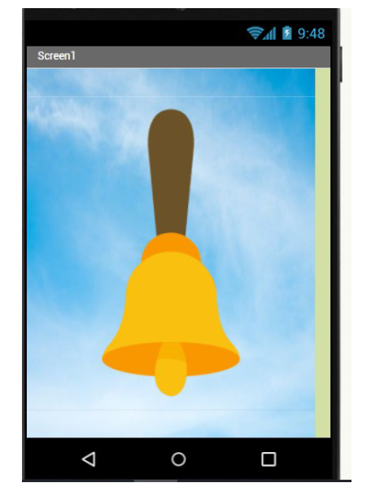
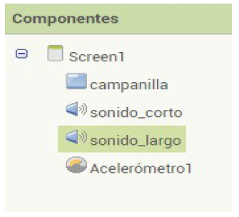

Parece lógico pensar que lo primero que debas tener claro es con qué recursos cuentan hoy en día los dispositivos móviles, y como estos son utilizados por las diferentes aplicaciones instaladas. Por ejemplo, para echar una foto es lógico pensar que la aplicación "cámara" utilice la cámara de tu dispositivo, y si deseo grabar un video también utilizará el micrófono. Sin embargo hay aplicaciones más complejas que requieren diversos periféricos para funcionar, como el Bluetooth, el acelerómetro...
- Espera, espera... ¿"Aceloqué"?
Esto es solo el principio, puedes comenzar con la primera actividad. Verás como te gusta.
1. ¿Cómo funcionan las Apps?
Como hemos mencionado antes, una aplicación móvil requiere de diferentes recursos para ser utilizada, o si no... ¿Cómo escribirías en WhatsApp sin teclado en tu pantalla táctil? Te propongo lo siguiente, escoge una pareja y utilizando la aplicación Genially, realizarás un póster interactivo donde analices una o varias aplicaciones, mencionando los recursos que necesita para funcionar. Te expongo a continuación algún que otro ejemplo.
Twitter
Es una red social en la que se publica contenido en forma de texto aunque con un límite de caracteres, aunque también pueden compartirse fotos y otro tipo de contenido.
Uso de la pantalla táctil como periférico de entrada y salida.
Uso de la cámara y micrófono.
Posibilidad de permisos de ubicación.
¿Algo más?
Aplicación de mando a distancia
¿Quién no ha perdido alguna vez el mando de la televisión y ha utilizado el teléfono móvil como dispositivo de control remoto? ¿Sólo yo?
Servicios de conexión por vía infrarrojos, Bluethoot o wifi.
App de seguimiento deportivo
La aplicación de podómetro es una App que es capaz de contabilizar el numero de pasos aproximados que realizas. Esta aplicación se encuentra normalmente integrada en aplicaciones de seguimiento deportivo.
Acelerómetro el cual a través del movimiento determina con cierto margen de error los diferentes pasos que da el usuario.
Servicio de ubicación.
Conexión a internet para almacenamiento de datos en la nube.
2. ¿Qué aplicación usaremos?
Vamos a introducir el uso de la aplicación AppInventor, para ellos exploraremos la interfaz siguiendo los siguientes items.
Inicio de sesión y pantalla de Proyectos
Una vez iniciada la sesión en la aplicación AppInventor, aparece una ventana como esta. En ella tenemos la pestaña "Proyectos", en la cual se desplegará una selección para comenzar un proyecto nuevo o para importar o exportar archivos .aia algo que nos será de utilidad en un futuro. También debemos realizar especial atención a la pestaña conectar que me permitirá conectar la aplicación con mi dispositivo móvil mediante AI Companion.
Nuevo proyecto. Pantalla Diseñador.
En el momento que creemos un nuevo proyecto aparecerá la siguiente ventana, os comento rapidamente algunos aspectos de interés.
En la parte superior nos encontraremos la selección de ventana "Screen1" y la posibilidad para añadir nuevas ventanas.
En el margen izquierdo se localizan las diferentes paletas, ordenadas mediante pestañas. Descubriremos algunas de ellas conforme avancemos.
En la parte centra se encuentra el visor, aquí iremos arrastrando los diferentes componente provenientes de las paletas para diseñar la App.
A la derecha del visor nos encontramos la zona "Componentes" donde irán apareciendo todos los componentes que se irán incluyendo en la aplicación, de esta manera podremos cambiar el nombre del componente o borrarlos.
Justo abajo de componentes nos encontramos la ventana de "medios". En este lugar deberemos cargar y subir los diferentes recursos externos que necesitemos, como imágenes o sonidos.
En la parte derecha se sitúa la ventana de propiedades. En ella podremos modificar, colores, tamaños, disposiciones, texto a etiquetas, y un largo etc.
Por último, justo sobre la ventana de propiedades, se observan dos botones: "Diseñador" y "Bloques". Estos son los dos modos de configuración de una aplicación. Acabamos de ver todo lo referente al modo de diseñador, si pulsamos en bloques, cambiaremos al modo que nos permitirá programar.
Nuevo proyecto. Pantalla Bloques.
Una vez pulsamos en "Bloques" la pantalla cambia y como hemos mencionado antes nos encontramos en la zona que posibilitará programar los diferentes recursos que introduzcamos en nuestra App. Bastará con arrastrar los bloques y relacionarlos de la manera adecuada. Algo muy importante a tener en cuenta es que, cada pantalla o Screen se programará por separado. también te recomiendo que nombres los componentes utilizados para que la labor de programación sea más sencilla.
3. Tu primera aplicación. Campanilla.
¿Qué mejor manera que conocer la aplicación que con una simple práctica dirigida? Vamos a realizar nuestra primera App. ¿Emocionado?
Busca un compañero y descarga todos los recursos necesarios que se encuentran en nuestro lugar de referencia. Una vez aquí, sigue los pasos para realizar la aplicación.
Resumen de la aplicación:
En este primer proyecto aprenderemos a usar: Screen, botones y sonidos. La aplicación realizará lo siguiente: 1.- Cuando pulsemos (clic) en la campanilla comenzará el sonido largo de una campana y además el móvil vibrará durante 1 segundo. 2.- Cada vez que agitemos el móvil empezará un sonido corto. 3.- Si mantenemos pulsada (clic largo) la campanilla el sonido se apagará.

Instrucciones. Modo diseñador.
1.- Conectar con App Inventor 2 y empezar un nuevo proyecto. Llamarlo Campanilla.
2.- Conectar Al Companion para ver los cambios en el móvil.
3.- Utilizando la parte del diseñador del programa y en la parte de Medios, subir las imágenes de la campanilla y del fondo. Además subir los dos sonidos necesarios, el corto y el largo.
4.- En los componentes pinchar en screen1 y en sus propiedades en ImagenDefondo hay que ponerle que inserte la imagen llamada fondo de nubes. Con esto ya tenemos un fondo de nubes en la parte del visor.
5.- Ahora vamos a insertar los otros componentes. En la paleta de Interfaz de usuario localizamos el componente botón y lo arrastramos al visor. Ahora modificamos sus propiedades.
En imagen se inserta la imagen de la campanilla.
En texto se borra texto para botón1.
En el tamaño de alto y ancho se pone 350 píxeles.
Ayuda: se necesita un botón porque es donde aparece clic largo, si necesitara un clic normal podría poner una imagen.
6.- En la paleta de medios buscar sonido y soltar 2 en el visor. Ir a propiedades y en origen hay que insertarles el sonido corto (a sonido 1) y el sonido largo (a sonido 2).
7.- Para terminar de insertar los componentes hay que ir a la paleta de sensores y arrastrar un acelerómetro al visor.
Los componentes de sonido y acelerómetro son no visibles y no aparecen en la pantalla. Pero aparecen los nombres debajo del visor. Podríamos cambiar alguna propiedad de estos dos tipos de componentes pero lo haremos en la programación y no aquí en el diseñador.
8.- Por último ir a componentes y en la parte de abajo cambiarles los nombre al botón y a los sonidos.

Instrucciones. Modos bloques.
9.- Dentro de bloques pinchar en campanilla y arrastrar los bloque naranjas. Después pinchar en sonido largo y arrastrar los bloque lilas. Por último en la carpeta de matemáticas arrastrar el primer bloque y poner 1000.
10.- Para terminar pinchar en el acelerómetro y en sonido corto y hacer el siguiente bloque.
11.- Cuando veas que funciona como tu quieres ir a Generar y pinchar en App (generar código QR para el archivo .apk).
12.- Descargar el archivo en el móvil y abrirlo. Si no se descarga es por que hay que habilitar el móvil en los ajustes para poder descargar. El móvil pedirá que instales el juego.
Investiga
Mejora la aplicación poniendo etiquetas (Paleta/interfaz de usuario) en forma de ayuda, donde se explique que es lo que hay que hacer para que suene la aplicación. Cambiar las propiedades de las etiquetas, es decir, color de fondo, color y tamaño de letra, etc.
Una ves termines, enhorabuena. Has creado tu primera aplicación móvil.
Publica en tu Sitio Web
Una vez finalizada la actividad es el momento de que utilices cinco minutos de tu tiempo para compartir la App que acabas de crear en tu Google Sites. Realiza una serie de capturas, y comenta de manera resumida el proceso llevado a acabo. Por último indica y muestra las mejoras que le realizaste a la aplicación.